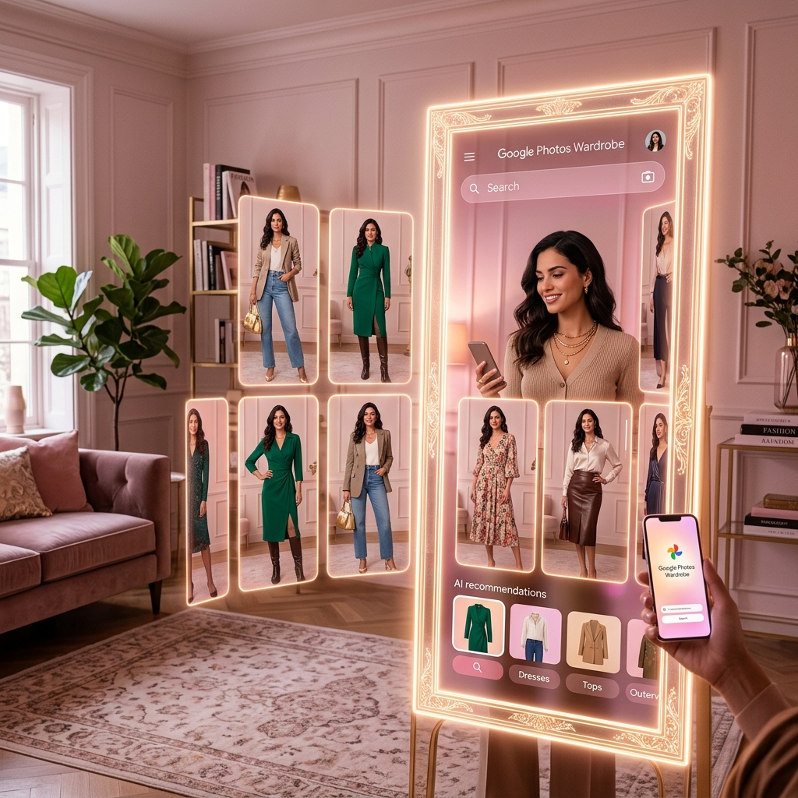

The AI Stylist: Transforming Retail with Google Photos Wardrobe

The "last mile" of online retail has always been the fitting room. You see a shirt you like, but you have no idea how it will actually look on you. This uncertainty is why retail returns cost businesses billions every year. Google Photos Wardrobe is the AI-powered bridge that brings the fitting room to the smartphone. (Google Photos Blog)
What is Photos Wardrobe?
Photos Wardrobe is a new AI feature that uses advanced image-to-image models to allow for "virtual try-ons" and personal styling. It analyzes your existing photos to understand your body type and style preferences, then lets you "try on" new clothing items digitally to see how they fit and flow.
Why This Matters for Your Business
If you're in the fashion or retail space, this is a game-changer. It’s no longer about just showing a product; it’s about showing a *personalized* product. At Kemper Design Services, we help our retail clients integrate these "try-on" experiences into their stores to reduce returns and increase customer confidence.
Trending Tasks & Features
- Virtual Try-On: Letting customers see exactly how your products will look on them before they hit "buy."
- Personalized Outfit Recommendations: Suggesting items that complement what the customer already has in their digital wardrobe.
- Size Accuracy AI: Using image analysis to recommend the perfect size, reducing the cost of returns.
- Interactive Style Boards: Allowing customers to build "looks" using your inventory and their own photos.
The ROI: Confidence is Conversion
The biggest reason people don't buy clothes online is fear—fear that it won't fit or won't look good. By providing a virtual styling assistant, you're removing that fear. This leads to higher conversion rates, fewer returns, and a much more loyal customer base.